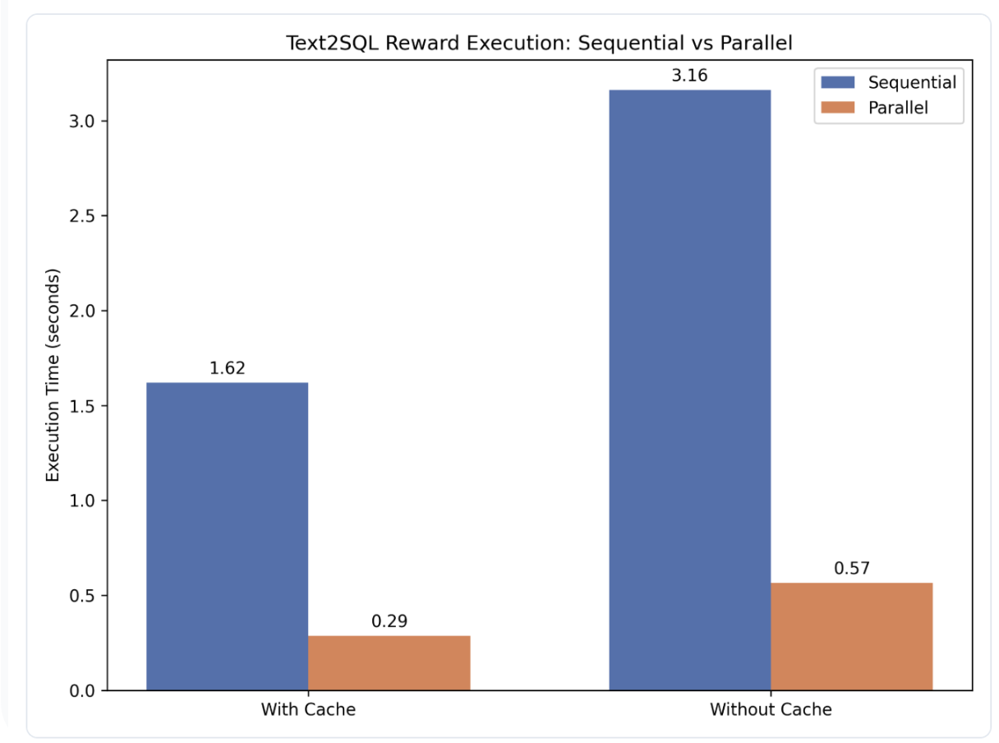
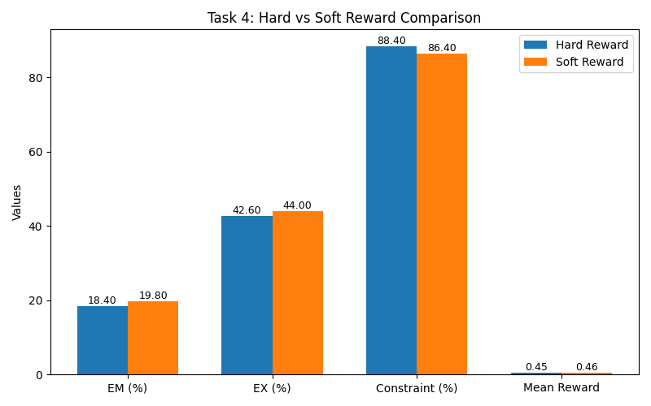

Establishing the foundation on the Spider Dataset
The initial objective of this research was to generate complex SQL queries where the training reward is derived from actually running the queries against a live SQLite database, targeting a baseline Execution Accuracy of 35%+. The pipeline leverages Mac MPS acceleration for model inference while routing SQLite execution to the CPU to heavily parallelize reward computation.
Core Stack: torch, transformers, peft (LoRA), trl (RL loop), sqlite3, sqlparse.
Before advancing to complex optimization tasks, we evaluated three foundational seq2seq architectures to establish our baseline. Each model underwent Supervised Fine-Tuning (SFT) followed by Execution-Guided RLHF.
CodeT5-Base was selected as the primary architecture. It demonstrated the strongest innate structural SQL consistency and baseline stability.
We tested three distinct schema encoding strategies injected into the prompt: Table names only, Table + Column names, and Full Schema Description. Serializing the Table + Column names provided the optimal balance of token-efficiency and accuracy, significantly reducing hallucination compared to table names alone.
During initial environment setup, we tested execution timeouts (1s vs 5s) and found 1s was sufficient to terminate infinite Cartesian joins without falsely penalizing valid, complex queries. Among initial reward variants (Exact Match, Partial Match, Execution Success), strict Execution Success yielded the most stable early learning signal.
Advanced techniques applied to the CodeT5-Base architecture
The objective of this task is to eliminate the SQLite I/O bottleneck during reinforcement learning rollout generation, thereby enabling efficient batch processing on CPU-based systems.
The execution pipeline was optimized by replacing sequential query execution with a parallel framework using
ThreadPoolExecutor, enabling concurrent execution across 20 database connections.
To further reduce overhead, a connection pooling strategy was implemented to reuse active SQLite connections
across rollouts.
Additionally, a query caching mechanism based on SQL hashing was introduced. This allows immediate retrieval of previously computed results, avoiding redundant database execution and significantly reducing computation time.
The evaluation was conducted using 100 rollout samples with 20 concurrent threads to measure execution performance under optimized conditions.
For interactive demonstration and real-time experimentation, refer to:
Live Demo (Hugging Face Space)

The optimized system achieved a 5.63× speedup compared to the sequential baseline. Execution time decreased from 1.62 seconds (sequential) to 0.28 seconds (parallel with caching).
Furthermore, the introduction of caching reduced redundant execution overhead, resulting in an additional ~50% reduction in latency within the parallel setup.
The proposed optimization effectively removes the database execution bottleneck, enabling faster reward computation and improving the scalability of RL-based Text-to-SQL training pipelines.
The objective of this task is to systematically capture and analyze execution failures generated by the model during SQL evaluation, enabling targeted improvements through reward shaping and constraint design.
During reinforcement learning rollouts, SQL execution errors were intercepted and
categorized into predefined classes such as wrong_column,
wrong_table, and ambiguous_column.
These errors were logged and aggregated to construct a structured telemetry dataset.
A diagnostic dashboard was developed to visualize error distributions and analyze failure patterns across SQL clauses such as WHERE, JOIN, GROUP BY, and ORDER BY.
The telemetry analysis shows that 79.2% of failures are attributed to
wrong_column errors, indicating that the model frequently
generates references to non-existent columns.
These errors are predominantly concentrated in WHERE and JOIN clauses, suggesting that the model has learned SQL syntax but lacks accurate schema grounding and relational understanding.
For real-time experimentation and to observe error behavior interactively, refer to:
Live Demo (Hugging Face Space)
Execution-guided error analysis provides critical insights into model behavior, revealing schema grounding as the primary challenge. These findings enable targeted improvements through constraint-based decoding and enhanced reward design.
The objective of this task is to eliminate schema hallucination during SQL generation by enforcing database-aware constraints during auto-regressive decoding.
A schema parser was used to construct a constraint graph containing valid tables, columns, and relationships for each database. During decoding, token logits corresponding to invalid schema elements were masked, ensuring that only valid SQL components could be generated.
This approach restricts the search space of the language model, preventing generation of non-existent tables or columns and improving syntactic validity.
The introduction of schema-aware constraints significantly improved execution performance. While the Exact Match (EM) score decreased (39.9% → 22.8%), the Execution Accuracy (EX) increased (38.1% → 41.8%), indicating improved functional correctness.
The constraint satisfaction rate increased substantially (≈72%), demonstrating that the model consistently generates schema-valid queries. This shift highlights a transition from strict text matching to execution-oriented correctness.
Schema-aware constrained decoding effectively shifts the model from syntactic correctness to semantic validity, resulting in more executable and reliable SQL queries.
The objective of this task is to evaluate the impact of reward design on reinforcement learning stability by comparing a sparse binary reward with a dense soft reward.
Two reward functions were implemented:
Both models were trained under identical conditions to ensure a fair comparison of learning behavior and performance.

| Metric | Hard Reward | Soft Reward |
|---|---|---|
| Execution Accuracy (EX) | 42.6% | 44.0% |
| Mean Reward | 0.453 | 0.460 |
| Reward Variance | 0.2405 | 0.2403 |
The soft reward formulation provides a denser learning signal, allowing the model to receive partial credit for partially correct outputs. This leads to improved execution accuracy and slightly reduced variance, indicating more stable gradient updates during training.
In contrast, the hard reward signal is sparse and less informative, making optimization more challenging and slowing convergence.
Soft reward shaping enhances reinforcement learning performance by stabilizing policy gradients and improving execution accuracy, making it a more effective approach than binary reward signals.
The objective of this task is to evaluate the impact of model quantization on inference efficiency by comparing latency and execution accuracy across full-precision and quantized configurations.
The trained CodeT5 model was quantized using INT8 dynamic quantization. Additionally, a mixed-precision configuration was evaluated, where the decoder was quantized while the encoder remained in full precision to preserve stability.
Performance was measured in terms of mean latency, percentile latency (P50, P90), and execution accuracy across multiple inference samples.
| Model | Execution Accuracy (EX) | Mean Latency (s) |
|---|---|---|
| FP32 | 36% | 3.11 |
| INT8 Dynamic | 36% | 1.65 |
| INT8 Decoder (Mixed Precision) | 38% | 1.66 |
INT8 quantization significantly reduces inference latency, achieving nearly a 2× speed improvement compared to the FP32 baseline. Importantly, this improvement is achieved without degradation in execution accuracy.
The mixed-precision configuration further improves execution accuracy (36% → 38%), suggesting that partial quantization may act as a regularization mechanism while preserving model expressiveness.
To evaluate inference behavior and latency interactively, refer to:
Live Demo (Hugging Face Space)
Evaluation of System Improvements and Strategic Extensions
The integration of optimization techniques across Tasks 1–5 resulted in a significant transformation of the baseline Text-to-SQL system. The pipeline evolved from a computationally inefficient and error-prone architecture into a scalable, schema-aware, and deployment-ready inference system.
This work demonstrates that combining execution-guided reinforcement learning with system-level optimizations—such as parallel execution, schema-aware constraints, reward shaping, and model quantization—can significantly enhance the performance and practicality of Text-to-SQL systems.
The resulting architecture achieves improved execution accuracy, reduced latency, and higher reliability, making it suitable for real-world deployment in resource-constrained environments.
Overall, the study highlights the importance of integrating model-level and system-level improvements to build robust and scalable natural language interfaces for structured data.